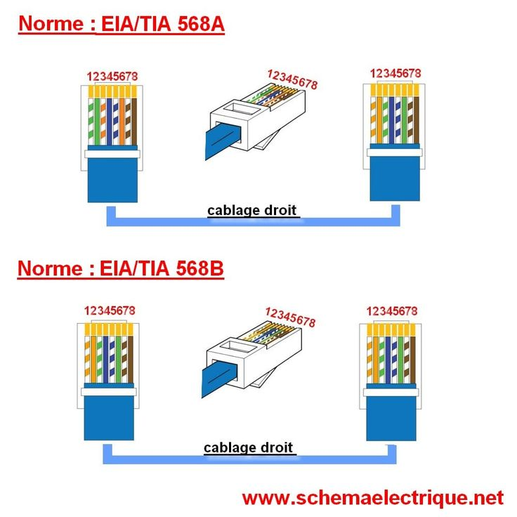
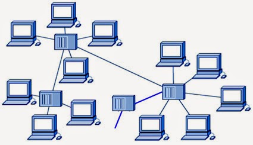
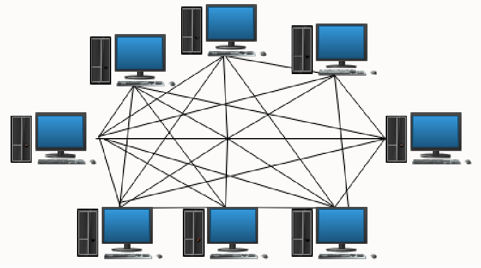
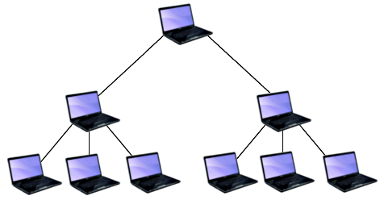

Cours : Réseau Informatique
Un réseau informatique est un ensemble de dispositifs reliés entre eux pour partager des informations, des fichiers et des ressources comme des imprimantes ou des connexions internet. Comprendre les bases des réseaux est essentiel pour tout informaticien.
1. Types de Réseaux
- LAN (Local Area Network) : réseau local pour une maison, un bureau ou une école.
- WAN (Wide Area Network) : réseau étendu, souvent pour connecter plusieurs villes ou pays.
- MAN (Metropolitan Area Network) : réseau pour une ville ou une grande zone géographique.
2. Composants d’un réseau
- Ordinateurs et serveurs
- Switches et routeurs
- Câbles réseau (RJ45)
- Points d’accès Wi-Fi

3. Câblage RJ45
Les câbles RJ45 sont utilisés pour connecter les ordinateurs aux switches ou aux routeurs. Chaque câble contient 8 fils de couleurs spécifiques et doit être câblé correctement pour assurer une communication stable.
4. Exemple de câblage
- Couper le câble à la bonne longueur.
- Dénuder environ 2 cm de la gaine externe.
- Disposer les fils selon la norme T568B : orange/blanc, orange, vert/blanc, bleu, bleu/blanc, vert, marron/blanc, marron.
- Insérer les fils dans le connecteur RJ45.
- Presser avec une pince à sertir.
5. Configuration d’un réseau local
- Attribuer une adresse IP à chaque ordinateur (exemple : 192.168.1.x).
- Définir le masque de sous-réseau (exemple : 255.255.255.0).
- Connecter tous les ordinateurs à un switch avec des câbles RJ45.
- Tester la connectivité avec la commande
ping.
6. Conseils pratiques
- Toujours tester vos câbles avant de les installer.
- Utiliser des couleurs différentes pour les câbles pour une meilleure organisation.
- Documenter votre réseau pour faciliter les dépannages futurs.
7. Le Modèle OSI
Le modèle OSI (Open Systems Interconnection) est une norme qui décrit comment les informations circulent dans un réseau. Il permet de comprendre, de concevoir et de dépanner les systèmes de communication en séparant les fonctions réseau en 7 couches distinctes.
Rôle et importance du modèle OSI :
- Fournir une structure pour le développement et la compréhension des protocoles réseau.
- Permettre la compatibilité et l’interopérabilité entre différents systèmes.
- Simplifier le dépannage et l’analyse des problèmes réseau.
Les 7 couches du modèle OSI :
- Couche 1 : Physique - Transmission des bits sur un support physique (câbles, fibres, ondes radio). Exemples : RJ45, fibre optique.
- Couche 2 : Liaison de données - Assure une transmission fiable entre deux machines sur le même réseau. Exemples : Ethernet, MAC, Switch.
- Couche 3 : Réseau - Acheminement des paquets d’une machine à une autre sur plusieurs réseaux. Exemples : IP, routeur.
- Couche 4 : Transport - Transport fiable des données d’une application à une autre. Exemples : TCP, UDP.
- Couche 5 : Session - Gestion des sessions de communication entre applications. Exemples : ouverture et fermeture de sessions.
- Couche 6 : Présentation - Conversion des formats et encodages pour que les applications comprennent les données. Exemples : SSL, chiffrement, compression.
- Couche 7 : Application - Interface directe avec l’utilisateur et les applications. Exemples : HTTP, FTP, SMTP.

8. Le Modèle TCP/IP
Le modèle TCP/IP est le protocole fondamental d’Internet. Il comporte 4 couches principales et est utilisé pour la communication sur les réseaux modernes.
Les 4 couches du modèle TCP/IP :
- Couche Accès Réseau - Correspond aux couches Physique et Liaison du modèle OSI. Gère le matériel et la transmission des données.
- Couche Internet - Correspond à la couche Réseau de l’OSI. Responsable de l’adressage IP et du routage des paquets.
- Couche Transport - Correspond à la couche Transport de l’OSI. Gère le transport fiable (TCP) ou non fiable (UDP).
- Couche Application - Regroupe les fonctions des couches Session, Présentation et Application de l’OSI. Exemples : HTTP, FTP, SMTP.
9. Différences entre OSI et TCP/IP
- Le modèle OSI comporte 7 couches, TCP/IP en a 4 couches principales.
- OSI est un modèle théorique utilisé pour comprendre les réseaux, TCP/IP est un protocole pratique utilisé sur Internet.
- Les couches du TCP/IP regroupent certaines couches de l’OSI (exemple : couche Application regroupe 5,6,7 de l’OSI).
- OSI est plus détaillé et pédagogique, TCP/IP est plus simple et utilisé pour la mise en œuvre réelle.
10. Les Différentes Topologies Physiques
Une topologie physique définit la manière dont les équipements d’un réseau sont connectés physiquement entre eux. Le choix d’une topologie influence la performance, la sécurité, la fiabilité et le coût d’installation du réseau.
1. Topologie en Étoile
Dans une topologie en étoile, tous les ordinateurs sont connectés à un équipement central appelé switch ou hub. Toutes les communications passent par cet équipement central.

- Facile à installer et à gérer
- Si un câble est coupé, seul l’ordinateur concerné est affecté
- Bonne performance avec un switch
- Si le switch tombe en panne, tout le réseau s’arrête
- Nécessite plus de câbles
2. Topologie en Anneau-Bus
La topologie anneau-bus combine les caractéristiques de la topologie en bus et de la topologie en anneau. Les équipements sont reliés en ligne, mais le signal peut circuler de manière organisée comme dans un anneau.
 Avantages :
Avantages :
- Structure simple
- Organisation plus contrôlée que le bus simple
- Complexité supérieure au bus classique
- Dépend fortement du câble principal
3. Topologie en Étoile Étendue
La topologie en étoile étendue est une extension de la topologie en étoile. Plusieurs switchs sont connectés à un switch principal.
- Idéal pour les grandes entreprises
- Facile à étendre
- Bonne organisation du réseau
- Dépendance au switch principal
4. Topologie en Anneau
Dans la topologie en anneau, chaque ordinateur est connecté à deux autres ordinateurs, formant ainsi un cercle fermé. Les données circulent dans un seul sens.

- Moins de collisions
- Transmission organisée
- Si un poste tombe en panne, tout le réseau peut être affecté
- Difficile à modifier
5. Topologie Maillée
Dans une topologie maillée, chaque équipement est connecté à plusieurs autres équipements. Il existe deux types : maillage complet et maillage partiel.
 Avantages :- Très grande fiabilité
- Si un lien tombe en panne, les données passent par un autre chemin
- Utilisée dans les réseaux critiques
- Très coûteuse
- Complexe à installer
6. Topologie Hiérarchique
La topologie hiérarchique (ou en arbre) organise le réseau en plusieurs niveaux. Elle ressemble à une structure d’arbre avec un nœud principal et plusieurs sous-nœuds.
8. Les Réseaux Publics et Privés
Les réseaux informatiques peuvent être classés selon leur accessibilité. On distingue principalement les réseaux publics (internationaux) et les réseaux privés. Cette distinction est très importante en matière de sécurité et d’administration réseau.
1. Réseau Public (Réseau International)
Un réseau public est un réseau accessible à tout le monde. Le plus grand exemple de réseau public est Internet. Il permet la communication entre des millions d’ordinateurs à travers le monde.
- Accessible au grand public
- Connexion mondiale
- Moins sécurisé par défaut
- Nécessite des mesures de sécurité (pare-feu, VPN, chiffrement)
- Communication internationale
- Accès à l’information mondiale
- Risques de cyberattaques
- Moins de contrôle sur les données
2. Réseau Privé
Un réseau privé est un réseau réservé à un groupe spécifique d’utilisateurs. Il est généralement utilisé dans une entreprise, une école ou une organisation.
- Accès limité
- Contrôle total par l’organisation
- Plus sécurisé
3. Réseau Interne (Intranet)
Un réseau interne est une partie du réseau privé accessible uniquement aux membres de l’organisation. On l’appelle souvent Intranet.
- Haute sécurité
- Partage rapide des ressources internes
- Communication efficace entre services
4. Réseau Externe (Extranet)
Un réseau externe est une extension du réseau privé permettant l’accès à des partenaires externes autorisés (clients, fournisseurs). On l’appelle Extranet.
- Accès contrôlé
- Nécessite authentification
- Utilise souvent VPN et chiffrement
Résumé Comparatif
| Type de réseau | Accessibilité | Exemple |
|---|---|---|
| Réseau Public | Tout le monde | Internet |
| Réseau Privé | Membres autorisés | Réseau d'entreprise |
| Intranet | Interne uniquement | Portail interne |
| Extranet | Partenaires externes | Accès fournisseur sécurisé |
- Bonne organisation
- Facile à gérer dans les grandes structures
- Dépendance au niveau supérieur
- Configuration plus complexe
9. Exercices et Travaux Pratiques
Cette section permet aux étudiants de tester leurs connaissances sur toutes les notions étudiées : modèles OSI et TCP/IP, topologies, types de réseaux et configuration réseau.
Partie A : Questions Théoriques
- Définir un réseau informatique.
- Expliquer le rôle du modèle OSI.
- Combien de couches contient le modèle OSI ? Les citer dans l’ordre.
- Quelle est la différence entre TCP et UDP ?
- Quelle est la différence entre un réseau public et un réseau privé ?
- Expliquer la différence entre Intranet et Extranet.
- Quels sont les avantages de la topologie en étoile ?
- Pourquoi la topologie en bus est-elle moins utilisée aujourd’hui ?
Partie B : QCM (Choisir la bonne réponse)
- Le modèle OSI contient :
- a) 4 couches
- b) 5 couches
- c) 7 couches
- d) 8 couches
- Le protocole IP appartient à :
- a) Couche Transport
- b) Couche Réseau
- c) Couche Application
- d) Couche Session
- Dans une topologie en étoile, l’élément central est :
- a) Routeur
- b) Switch
- c) Câble coaxial
- d) Serveur
- Internet est un exemple de :
- a) Réseau privé
- b) Réseau interne
- c) Réseau public
- d) Réseau local isolé
Partie C : Exercices Pratiques
Exercice 1 : Identification des couches
Associer chaque élément à sa couche OSI correspondante :
- Adresse IP
- Câble RJ45
- HTTP
- TCP
- Switch
Exercice 2 : Configuration réseau
On vous donne les informations suivantes :
- Adresse IP : 192.168.1.10
- Masque : 255.255.255.0
- Passerelle : 192.168.1.1
1. Indiquez la classe de cette adresse IP. 2. Combien d’hôtes peut contenir ce réseau ? 3. Donnez un exemple d’une autre adresse valide dans ce même réseau.
Exercice 3 : Étude de cas
Une entreprise possède 3 étages. Chaque étage contient 20 ordinateurs. L’entreprise souhaite :
- Une bonne performance
- Une extension facile du réseau
- Une bonne sécurité
Questions :
- Quelle topologie recommandez-vous ?
- Pourquoi ?
- Quel type de réseau sera utilisé (public ou privé) ?
Exercice 4 : Câblage RJ45
1. Citer l’ordre des couleurs selon la norme T568B. 2. Pourquoi faut-il utiliser un testeur de câble ? 3. Que se passe-t-il si deux fils sont inversés ?
Partie D : Travaux Pratiques (TP)
TP 1 : Création d’un réseau local
- Connecter 2 ordinateurs à un switch.
- Configurer une adresse IP sur chaque machine.
- Tester la connexion avec la commande
ping. - Faire une capture d’écran des résultats.
TP 2 : Analyse des couches
Observer une communication web et identifier les protocoles utilisés dans chaque couche (HTTP, TCP, IP, Ethernet).
Bonus : Question de réflexion
Expliquez pourquoi le modèle OSI est important même si le modèle TCP/IP est celui utilisé en pratique sur Internet.